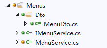
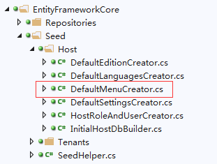

ABP 从数据库中创建菜单
/ / 点击 / 阅读耗时 6 分钟The current design of the menu does not consider persistence to the database, you need to do some work for this.
- You need to create an entity that is compatible with
ApplicationMenu.- Create a service that persists all menus to the database when the application is initialized(If the menu is not in the database table)
- Custom
DatabaseMenuManagerto replaceMenuManagerand get the menu from the database(should be filtered based on the current user).
实践
1. 创建菜单服务类

在Application项目里增加如下结构。主要的类文件MenuService是一个普通的业务类，继承自WindElectricityAppServiceBase以及自定义的接口IMenuService。接口继承自IAsyncCrudAppService<MenuDto>，这样就包含了默认要实现的几个CRUD方法。其中获取菜单的方法核心代码如下。
1 | public async Task<ListResultDto<MenuDto>> GetMenuForProviderAsync() |
注意事项，在这个时候，是不能调用ObjectMapper的，原因是：AutoMapper是在AbpAutoMapperModule的PreInitialize中替换成有效实现类（AutoMapperObjectMapper），而AutoMapperObjectMapper又依赖于IMapper的注入，该接口的注入是在AbpAutoMapperModule的PostInitialize方法中， 因AbpAutoMapperModule依赖于AbpKernalModule，该方法在核心模块的PostInitialize之后执行，所以在核心模块的PostInitialize中， 获取菜单时，要使用ObjectMapper会报错。
1.1 Castle.Windsor的属性注入
核心内容：
- Has ‘public’ accessible setter：必须是public的
- Is an instance property：属性而非字段
- If
ComponentModel.InspectionBehavioris set toPropertiesInspectionBehavior.DeclaredOnly, is not inherited： - Does not have parameters：没有参数
- Is not annotated with the
Castle.Core.DoNotWireAttributeattribute：没有打标签Castle.Core.DoNotWireAttribute
1.2 abp自定义的PropertiesDependenciesModelInspector
abp自定义了一个AbpPropertiesDependenciesModelInspector继承自PropertiesDependenciesModelInspector，该类仅仅是增加一个判断，以Microsoft开头的属性不进行注入。在abp的代码库中，AbpAspNetCoreDemo的Startup中的ConfigureServices方法中，也演示了如何调用自定义的PropertiesDependenciesModelInspector。当然我们也可以扩展自己的类，按照自己的需要决定属性如何注入。
1 | var propInjector = options.IocManager.IocContainer.Kernel.ComponentModelBuilder |
2. 增加自定义菜单Provider
在web项目的StartUp文件夹中增加一个自定义的NavigationProvider实现类。核心代码如下：
1 | public class CustomDbNavigationProvider : NavigationProvider |
3. 修改默认的菜单Provider
修改Startup文件夹中模块类的PreInitialize方法。将调用默认的Provider改成自定义的Provider
1 | public override void PreInitialize() |
4. 增加种子数据
如果有需要，在项目的EntityFrameworkCore层中增加相应的种子数据类及方法，并在SeedHelper中进行调用。这个就是根据表自动进行拼凑实体，调用相关的保存方法即可。代码略。
